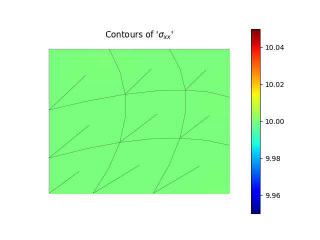
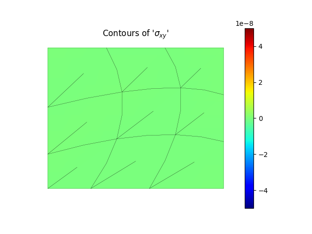

Note
Go to the end to download the full example code.
Patch test for mixed mesh of triangular and quadrilateral plate elements under in-plane loading
PatchMesher test for the mixed mesh of triangular and quadrilateral plate elements.
import math
import numpy as np
from femedu.examples import Example
from femedu.domain import System, Node
from femedu.solver import NewtonRaphsonSolver
#from femedu.elements.linear import Quad, Quad9
from femedu.elements.finite import Quad, Quad9
from femedu.materials import PlaneStress
from femedu.mesher import *
class ExamplePlate09b(Example):
def problem(self):
# ========== setting mesh parameters ==============
Nx = 3 # number of elements in the mesh
Ny = 3 # number of elements in the mesh
Lx = 100.0 # length of plate in the x-direction
Ly = 80.0 # length of plate in the y-direction
# ========== setting material parameters ==============
params = dict(
E=20000., # Young's modulus
nu=0.250, # Poisson's ratio
t=1.00 # thickness of the plate
)
# ========== setting load parameters ==============
px = 10.0 # uniform load normal to x=const
py = 0.0 # uniform load normal to y=const
pxy = 0.0 # uniform shear load on x=const and y=const
# ========== setting analysis parameters ==============
target_load_level = 1.00 # reference load
max_steps = 1 # number of load steps: 1 -> [0.0, 1.0]
# define a list of target load levels
load_levels = np.linspace(0, target_load_level, max_steps+1)
#
# ==== Build the system model ====
#
model = System()
model.setSolver(NewtonRaphsonSolver())
# create reference points
pt0 = (0, 0)
pt1 = (Lx, 0.0)
pt2 = (Lx, Ly)
pt3 = (0, Ly)
pt4 = (0.4 * Lx, 0)
pt5 = (Lx, 0.5 * Ly)
pt6 = (0.5 * Lx, Ly)
pt7 = (0.0, 0.4 * Ly)
pt8 = (0.6 * Lx, 0.55 * Ly)
mesher = PatchMesher(model,
pt0, pt1, pt2, pt3, # corner nodes
pt4, pt5, pt6, pt7, # mid-side nodes
pt8) # center node
#nodes, elements = mesher.quadMesh(Nx, Ny, Quad, PlaneStress(params))
nodes, elements = mesher.quadMesh(Nx, Ny, Quad9, PlaneStress(params))
# define support(s)
## find nodes at y==0 and x==0
for node in nodes:
X = node.getPos()
if math.isclose(X[0], 0.0):
node.fixDOF('ux') # horizontal support left side
if math.isclose(X[1], 0.0):
node.fixDOF('uy') # vertical support at y==0
# ==== complete the reference load ====
for elem, face in model.findFacesAlongLine((Lx, 0.0), (0.0, 1.0)):
face.setLoad(px, 0.0)
# model.report()
model.plot(factor=0, title="undeformed system", show_bc=1, show_loads=1)
model.setLoadFactor(1.0)
model.solve(verbose=1)
model.report()
model.plot(factor=25.)
model.valuePlot('sxx', show_mesh=1)
model.valuePlot('syy', show_mesh=1)
model.valuePlot('sxy', show_mesh=1)
Run the example by creating an instance of the problem and executing it by calling Example.run()
if __name__ == "__main__":
ex = ExamplePlate09b()
ex.run()

- 

- 
norm of the out-of-balance force: 3.3848e+02
norm of the out-of-balance force: 2.6333e-01
norm of the out-of-balance force: 1.4962e-07
+
System Analysis Report
=======================
Nodes:
---------------------
Node_544:
x: [0.000 0.000]
fix: ['ux', 'uy']
u: [0.000 0.000]
Node_545:
x: [11.111 0.000]
fix: ['uy']
u: [0.006 0.000]
Node_546:
x: [24.444 0.000]
fix: ['uy']
u: [0.012 0.000]
Node_547:
x: [40.000 0.000]
fix: ['uy']
u: [0.020 0.000]
Node_548:
x: [57.778 0.000]
fix: ['uy']
u: [0.029 0.000]
Node_549:
x: [77.778 0.000]
fix: ['uy']
u: [0.039 0.000]
Node_550:
x: [100.000 0.000]
fix: ['uy']
u: [0.050 0.000]
Node_551:
x: [0.000 8.889]
fix: ['ux']
u: [0.000 -0.001]
Node_552:
x: [16.667 12.099]
u: [0.008 -0.002]
Node_553:
x: [33.333 14.321]
u: [0.017 -0.002]
Node_554:
x: [50.000 15.556]
u: [0.025 -0.002]
Node_555:
x: [66.667 15.802]
u: [0.033 -0.002]
Node_556:
x: [83.333 15.062]
u: [0.042 -0.002]
Node_557:
x: [100.000 13.333]
u: [0.050 -0.002]
Node_558:
x: [0.000 19.556]
fix: ['ux']
u: [0.000 -0.002]
Node_559:
x: [20.370 24.691]
u: [0.010 -0.003]
Node_560:
x: [39.259 28.247]
u: [0.020 -0.004]
Node_561:
x: [56.667 30.222]
u: [0.028 -0.004]
Node_562:
x: [72.593 30.617]
u: [0.036 -0.004]
Node_563:
x: [87.037 29.432]
u: [0.043 -0.004]
Node_564:
x: [100.000 26.667]
u: [0.050 -0.003]
Node_565:
x: [0.000 32.000]
fix: ['ux']
u: [0.000 -0.004]
Node_566:
x: [22.222 37.778]
u: [0.011 -0.005]
Node_567:
x: [42.222 41.778]
u: [0.021 -0.005]
Node_568:
x: [60.000 44.000]
u: [0.030 -0.005]
Node_569:
x: [75.556 44.444]
u: [0.038 -0.006]
Node_570:
x: [88.889 43.111]
u: [0.044 -0.005]
Node_571:
x: [100.000 40.000]
u: [0.050 -0.005]
Node_572:
x: [0.000 46.222]
fix: ['ux']
u: [0.000 -0.006]
Node_573:
x: [22.222 51.358]
u: [0.011 -0.006]
Node_574:
x: [42.222 54.914]
u: [0.021 -0.007]
Node_575:
x: [60.000 56.889]
u: [0.030 -0.007]
Node_576:
x: [75.556 57.284]
u: [0.038 -0.007]
Node_577:
x: [88.889 56.099]
u: [0.044 -0.007]
Node_578:
x: [100.000 53.333]
u: [0.050 -0.007]
Node_579:
x: [0.000 62.222]
fix: ['ux']
u: [0.000 -0.008]
Node_580:
x: [20.370 65.432]
u: [0.010 -0.008]
Node_581:
x: [39.259 67.654]
u: [0.020 -0.008]
Node_582:
x: [56.667 68.889]
u: [0.028 -0.009]
Node_583:
x: [72.593 69.136]
u: [0.036 -0.009]
Node_584:
x: [87.037 68.395]
u: [0.043 -0.009]
Node_585:
x: [100.000 66.667]
u: [0.050 -0.008]
Node_586:
x: [0.000 80.000]
fix: ['ux']
u: [0.000 -0.010]
Node_587:
x: [16.667 80.000]
u: [0.008 -0.010]
Node_588:
x: [33.333 80.000]
u: [0.017 -0.010]
Node_589:
x: [50.000 80.000]
u: [0.025 -0.010]
Node_590:
x: [66.667 80.000]
u: [0.033 -0.010]
Node_591:
x: [83.333 80.000]
u: [0.042 -0.010]
Node_592:
x: [100.000 80.000]
u: [0.050 -0.010]
Elements:
---------------------
Quad9_823: nodes ( Node_544 Node_546 Node_560 Node_558 Node_545 Node_553 Node_559 Node_551 Node_552 )
material: PlaneStress
strain (0): xx=4.998e-04 yy=-1.249e-04 xy=-4.772e-16 zz=-9.370e-05
stress (0): xx=9.995e+00 yy=3.588e-10 xy=-3.817e-12 zz=0.000e+00
strain (1): xx=4.998e-04 yy=-1.249e-04 xy=-2.068e-16 zz=-9.370e-05
stress (1): xx=9.995e+00 yy=3.553e-10 xy=-1.654e-12 zz=0.000e+00
strain (2): xx=4.998e-04 yy=-1.249e-04 xy=3.648e-16 zz=-9.370e-05
stress (2): xx=9.995e+00 yy=3.624e-10 xy=2.919e-12 zz=0.000e+00
strain (3): xx=4.998e-04 yy=-1.249e-04 xy=3.619e-17 zz=-9.370e-05
stress (3): xx=9.995e+00 yy=3.659e-10 xy=2.896e-13 zz=0.000e+00
strain (4): xx=4.998e-04 yy=-1.249e-04 xy=2.256e-16 zz=-9.370e-05
stress (4): xx=9.995e+00 yy=3.636e-10 xy=1.805e-12 zz=0.000e+00
strain (5): xx=4.998e-04 yy=-1.249e-04 xy=1.810e-16 zz=-9.370e-05
stress (5): xx=9.995e+00 yy=3.565e-10 xy=1.448e-12 zz=0.000e+00
strain (6): xx=4.998e-04 yy=-1.249e-04 xy=2.709e-16 zz=-9.370e-05
stress (6): xx=9.995e+00 yy=3.565e-10 xy=2.167e-12 zz=0.000e+00
strain (7): xx=4.998e-04 yy=-1.249e-04 xy=4.371e-16 zz=-9.370e-05
stress (7): xx=9.995e+00 yy=3.647e-10 xy=3.497e-12 zz=0.000e+00
strain (8): xx=4.998e-04 yy=-1.249e-04 xy=4.990e-16 zz=-9.370e-05
stress (8): xx=9.995e+00 yy=3.742e-10 xy=3.992e-12 zz=0.000e+00
Quad9_824: nodes ( Node_546 Node_548 Node_562 Node_560 Node_547 Node_555 Node_561 Node_553 Node_554 )
material: PlaneStress
strain (0): xx=4.998e-04 yy=-1.249e-04 xy=-2.176e-16 zz=-9.370e-05
stress (0): xx=9.995e+00 yy=3.612e-10 xy=-1.741e-12 zz=0.000e+00
strain (1): xx=4.998e-04 yy=-1.249e-04 xy=1.073e-15 zz=-9.370e-05
stress (1): xx=9.995e+00 yy=3.671e-10 xy=8.586e-12 zz=0.000e+00
strain (2): xx=4.998e-04 yy=-1.249e-04 xy=8.493e-16 zz=-9.370e-05
stress (2): xx=9.995e+00 yy=3.612e-10 xy=6.794e-12 zz=0.000e+00
strain (3): xx=4.998e-04 yy=-1.249e-04 xy=-1.298e-16 zz=-9.370e-05
stress (3): xx=9.995e+00 yy=3.624e-10 xy=-1.038e-12 zz=0.000e+00
strain (4): xx=4.998e-04 yy=-1.249e-04 xy=4.056e-16 zz=-9.370e-05
stress (4): xx=9.995e+00 yy=3.541e-10 xy=3.245e-12 zz=0.000e+00
strain (5): xx=4.998e-04 yy=-1.249e-04 xy=1.366e-15 zz=-9.370e-05
stress (5): xx=9.995e+00 yy=3.517e-10 xy=1.093e-11 zz=0.000e+00
strain (6): xx=4.998e-04 yy=-1.249e-04 xy=2.288e-16 zz=-9.370e-05
stress (6): xx=9.995e+00 yy=3.470e-10 xy=1.831e-12 zz=0.000e+00
strain (7): xx=4.998e-04 yy=-1.249e-04 xy=4.524e-16 zz=-9.370e-05
stress (7): xx=9.995e+00 yy=3.624e-10 xy=3.619e-12 zz=0.000e+00
strain (8): xx=4.998e-04 yy=-1.249e-04 xy=9.874e-16 zz=-9.370e-05
stress (8): xx=9.995e+00 yy=3.541e-10 xy=7.899e-12 zz=0.000e+00
Quad9_825: nodes ( Node_548 Node_550 Node_564 Node_562 Node_549 Node_557 Node_563 Node_555 Node_556 )
material: PlaneStress
strain (0): xx=4.998e-04 yy=-1.249e-04 xy=-3.923e-16 zz=-9.370e-05
stress (0): xx=9.995e+00 yy=3.553e-10 xy=-3.138e-12 zz=0.000e+00
strain (1): xx=4.998e-04 yy=-1.249e-04 xy=3.238e-16 zz=-9.370e-05
stress (1): xx=9.995e+00 yy=3.624e-10 xy=2.590e-12 zz=0.000e+00
strain (2): xx=4.998e-04 yy=-1.249e-04 xy=1.560e-15 zz=-9.370e-05
stress (2): xx=9.995e+00 yy=3.647e-10 xy=1.248e-11 zz=0.000e+00
strain (3): xx=4.998e-04 yy=-1.249e-04 xy=-1.472e-16 zz=-9.370e-05
stress (3): xx=9.995e+00 yy=3.636e-10 xy=-1.177e-12 zz=0.000e+00
strain (4): xx=4.998e-04 yy=-1.249e-04 xy=1.808e-16 zz=-9.370e-05
stress (4): xx=9.995e+00 yy=3.612e-10 xy=1.446e-12 zz=0.000e+00
strain (5): xx=4.998e-04 yy=-1.249e-04 xy=7.344e-16 zz=-9.370e-05
stress (5): xx=9.995e+00 yy=3.624e-10 xy=5.876e-12 zz=0.000e+00
strain (6): xx=4.998e-04 yy=-1.249e-04 xy=-3.218e-16 zz=-9.370e-05
stress (6): xx=9.995e+00 yy=3.612e-10 xy=-2.575e-12 zz=0.000e+00
strain (7): xx=4.998e-04 yy=-1.249e-04 xy=1.429e-15 zz=-9.370e-05
stress (7): xx=9.995e+00 yy=3.659e-10 xy=1.143e-11 zz=0.000e+00
strain (8): xx=4.998e-04 yy=-1.249e-04 xy=-3.116e-17 zz=-9.370e-05
stress (8): xx=9.995e+00 yy=3.565e-10 xy=-2.493e-13 zz=0.000e+00
Quad9_826: nodes ( Node_558 Node_560 Node_574 Node_572 Node_559 Node_567 Node_573 Node_565 Node_566 )
material: PlaneStress
strain (0): xx=4.998e-04 yy=-1.249e-04 xy=1.031e-15 zz=-9.370e-05
stress (0): xx=9.995e+00 yy=3.529e-10 xy=8.245e-12 zz=0.000e+00
strain (1): xx=4.998e-04 yy=-1.249e-04 xy=1.728e-16 zz=-9.370e-05
stress (1): xx=9.995e+00 yy=3.636e-10 xy=1.382e-12 zz=0.000e+00
strain (2): xx=4.998e-04 yy=-1.249e-04 xy=2.597e-16 zz=-9.370e-05
stress (2): xx=9.995e+00 yy=3.411e-10 xy=2.078e-12 zz=0.000e+00
strain (3): xx=4.998e-04 yy=-1.249e-04 xy=2.551e-16 zz=-9.370e-05
stress (3): xx=9.995e+00 yy=3.659e-10 xy=2.040e-12 zz=0.000e+00
strain (4): xx=4.998e-04 yy=-1.249e-04 xy=9.308e-17 zz=-9.370e-05
stress (4): xx=9.995e+00 yy=3.612e-10 xy=7.447e-13 zz=0.000e+00
strain (5): xx=4.998e-04 yy=-1.249e-04 xy=2.567e-16 zz=-9.370e-05
stress (5): xx=9.995e+00 yy=3.695e-10 xy=2.054e-12 zz=0.000e+00
strain (6): xx=4.998e-04 yy=-1.249e-04 xy=-9.595e-16 zz=-9.370e-05
stress (6): xx=9.995e+00 yy=3.778e-10 xy=-7.676e-12 zz=0.000e+00
strain (7): xx=4.998e-04 yy=-1.249e-04 xy=-1.629e-16 zz=-9.370e-05
stress (7): xx=9.995e+00 yy=3.553e-10 xy=-1.303e-12 zz=0.000e+00
strain (8): xx=4.998e-04 yy=-1.249e-04 xy=-5.814e-16 zz=-9.370e-05
stress (8): xx=9.995e+00 yy=3.719e-10 xy=-4.651e-12 zz=0.000e+00
Quad9_827: nodes ( Node_560 Node_562 Node_576 Node_574 Node_561 Node_569 Node_575 Node_567 Node_568 )
material: PlaneStress
strain (0): xx=4.998e-04 yy=-1.249e-04 xy=-1.218e-15 zz=-9.370e-05
stress (0): xx=9.995e+00 yy=3.624e-10 xy=-9.746e-12 zz=0.000e+00
strain (1): xx=4.998e-04 yy=-1.249e-04 xy=-4.269e-16 zz=-9.370e-05
stress (1): xx=9.995e+00 yy=3.363e-10 xy=-3.415e-12 zz=0.000e+00
strain (2): xx=4.998e-04 yy=-1.249e-04 xy=-3.154e-18 zz=-9.370e-05
stress (2): xx=9.995e+00 yy=3.280e-10 xy=-2.523e-14 zz=0.000e+00
strain (3): xx=4.998e-04 yy=-1.249e-04 xy=-5.690e-16 zz=-9.370e-05
stress (3): xx=9.995e+00 yy=3.707e-10 xy=-4.552e-12 zz=0.000e+00
strain (4): xx=4.998e-04 yy=-1.249e-04 xy=-2.219e-16 zz=-9.370e-05
stress (4): xx=9.995e+00 yy=3.671e-10 xy=-1.775e-12 zz=0.000e+00
strain (5): xx=4.998e-04 yy=-1.249e-04 xy=7.000e-16 zz=-9.370e-05
stress (5): xx=9.995e+00 yy=3.624e-10 xy=5.600e-12 zz=0.000e+00
strain (6): xx=4.998e-04 yy=-1.249e-04 xy=-4.594e-16 zz=-9.370e-05
stress (6): xx=9.995e+00 yy=3.695e-10 xy=-3.675e-12 zz=0.000e+00
strain (7): xx=4.998e-04 yy=-1.249e-04 xy=-2.423e-16 zz=-9.370e-05
stress (7): xx=9.995e+00 yy=3.517e-10 xy=-1.938e-12 zz=0.000e+00
strain (8): xx=4.998e-04 yy=-1.249e-04 xy=-9.243e-16 zz=-9.370e-05
stress (8): xx=9.995e+00 yy=3.837e-10 xy=-7.394e-12 zz=0.000e+00
Quad9_828: nodes ( Node_562 Node_564 Node_578 Node_576 Node_563 Node_571 Node_577 Node_569 Node_570 )
material: PlaneStress
strain (0): xx=4.998e-04 yy=-1.249e-04 xy=-3.894e-16 zz=-9.370e-05
stress (0): xx=9.995e+00 yy=3.624e-10 xy=-3.115e-12 zz=0.000e+00
strain (1): xx=4.998e-04 yy=-1.249e-04 xy=1.538e-15 zz=-9.370e-05
stress (1): xx=9.995e+00 yy=3.683e-10 xy=1.230e-11 zz=0.000e+00
strain (2): xx=4.998e-04 yy=-1.249e-04 xy=-2.649e-16 zz=-9.370e-05
stress (2): xx=9.995e+00 yy=3.411e-10 xy=-2.119e-12 zz=0.000e+00
strain (3): xx=4.998e-04 yy=-1.249e-04 xy=-3.990e-16 zz=-9.370e-05
stress (3): xx=9.995e+00 yy=3.576e-10 xy=-3.192e-12 zz=0.000e+00
strain (4): xx=4.998e-04 yy=-1.249e-04 xy=-5.203e-16 zz=-9.370e-05
stress (4): xx=9.995e+00 yy=3.553e-10 xy=-4.163e-12 zz=0.000e+00
strain (5): xx=4.998e-04 yy=-1.249e-04 xy=4.414e-16 zz=-9.370e-05
stress (5): xx=9.995e+00 yy=3.707e-10 xy=3.531e-12 zz=0.000e+00
strain (6): xx=4.998e-04 yy=-1.249e-04 xy=-1.574e-15 zz=-9.370e-05
stress (6): xx=9.995e+00 yy=3.719e-10 xy=-1.259e-11 zz=0.000e+00
strain (7): xx=4.998e-04 yy=-1.249e-04 xy=-6.184e-16 zz=-9.370e-05
stress (7): xx=9.995e+00 yy=3.576e-10 xy=-4.947e-12 zz=0.000e+00
strain (8): xx=4.998e-04 yy=-1.249e-04 xy=2.185e-15 zz=-9.370e-05
stress (8): xx=9.995e+00 yy=3.944e-10 xy=1.748e-11 zz=0.000e+00
Quad9_829: nodes ( Node_572 Node_574 Node_588 Node_586 Node_573 Node_581 Node_587 Node_579 Node_580 )
material: PlaneStress
strain (0): xx=4.998e-04 yy=-1.249e-04 xy=-1.108e-15 zz=-9.370e-05
stress (0): xx=9.995e+00 yy=3.636e-10 xy=-8.863e-12 zz=0.000e+00
strain (1): xx=4.998e-04 yy=-1.249e-04 xy=-2.262e-16 zz=-9.370e-05
stress (1): xx=9.995e+00 yy=3.541e-10 xy=-1.810e-12 zz=0.000e+00
strain (2): xx=4.998e-04 yy=-1.249e-04 xy=2.790e-15 zz=-9.370e-05
stress (2): xx=9.995e+00 yy=3.624e-10 xy=2.232e-11 zz=0.000e+00
strain (3): xx=4.998e-04 yy=-1.249e-04 xy=1.712e-16 zz=-9.370e-05
stress (3): xx=9.995e+00 yy=3.636e-10 xy=1.370e-12 zz=0.000e+00
strain (4): xx=4.998e-04 yy=-1.249e-04 xy=6.399e-17 zz=-9.370e-05
stress (4): xx=9.995e+00 yy=3.683e-10 xy=5.120e-13 zz=0.000e+00
strain (5): xx=4.998e-04 yy=-1.249e-04 xy=-6.118e-16 zz=-9.370e-05
stress (5): xx=9.995e+00 yy=3.600e-10 xy=-4.894e-12 zz=0.000e+00
strain (6): xx=4.998e-04 yy=-1.249e-04 xy=2.961e-16 zz=-9.370e-05
stress (6): xx=9.995e+00 yy=3.861e-10 xy=2.369e-12 zz=0.000e+00
strain (7): xx=4.998e-04 yy=-1.249e-04 xy=-1.967e-16 zz=-9.370e-05
stress (7): xx=9.995e+00 yy=3.671e-10 xy=-1.573e-12 zz=0.000e+00
strain (8): xx=4.998e-04 yy=-1.249e-04 xy=-1.159e-15 zz=-9.370e-05
stress (8): xx=9.995e+00 yy=3.719e-10 xy=-9.272e-12 zz=0.000e+00
Quad9_830: nodes ( Node_574 Node_576 Node_590 Node_588 Node_575 Node_583 Node_589 Node_581 Node_582 )
material: PlaneStress
strain (0): xx=4.998e-04 yy=-1.249e-04 xy=-2.906e-16 zz=-9.370e-05
stress (0): xx=9.995e+00 yy=3.375e-10 xy=-2.325e-12 zz=0.000e+00
strain (1): xx=4.998e-04 yy=-1.249e-04 xy=1.011e-15 zz=-9.370e-05
stress (1): xx=9.995e+00 yy=3.257e-10 xy=8.087e-12 zz=0.000e+00
strain (2): xx=4.998e-04 yy=-1.249e-04 xy=1.487e-15 zz=-9.370e-05
stress (2): xx=9.995e+00 yy=3.636e-10 xy=1.190e-11 zz=0.000e+00
strain (3): xx=4.998e-04 yy=-1.249e-04 xy=-4.206e-16 zz=-9.370e-05
stress (3): xx=9.995e+00 yy=3.541e-10 xy=-3.365e-12 zz=0.000e+00
strain (4): xx=4.998e-04 yy=-1.249e-04 xy=4.074e-16 zz=-9.370e-05
stress (4): xx=9.995e+00 yy=3.671e-10 xy=3.259e-12 zz=0.000e+00
strain (5): xx=4.998e-04 yy=-1.249e-04 xy=1.557e-15 zz=-9.370e-05
stress (5): xx=9.995e+00 yy=3.600e-10 xy=1.245e-11 zz=0.000e+00
strain (6): xx=4.998e-04 yy=-1.249e-04 xy=-4.450e-16 zz=-9.370e-05
stress (6): xx=9.995e+00 yy=3.908e-10 xy=-3.560e-12 zz=0.000e+00
strain (7): xx=4.998e-04 yy=-1.249e-04 xy=-4.684e-16 zz=-9.370e-05
stress (7): xx=9.995e+00 yy=4.263e-10 xy=-3.747e-12 zz=0.000e+00
strain (8): xx=4.998e-04 yy=-1.249e-04 xy=9.631e-16 zz=-9.370e-05
stress (8): xx=9.995e+00 yy=3.683e-10 xy=7.705e-12 zz=0.000e+00
Quad9_831: nodes ( Node_576 Node_578 Node_592 Node_590 Node_577 Node_585 Node_591 Node_583 Node_584 )
material: PlaneStress
strain (0): xx=4.998e-04 yy=-1.249e-04 xy=-2.271e-15 zz=-9.370e-05
stress (0): xx=9.995e+00 yy=4.050e-10 xy=-1.817e-11 zz=0.000e+00
strain (1): xx=4.998e-04 yy=-1.249e-04 xy=-2.486e-16 zz=-9.370e-05
stress (1): xx=9.995e+00 yy=2.996e-10 xy=-1.989e-12 zz=0.000e+00
strain (2): xx=4.998e-04 yy=-1.249e-04 xy=-3.504e-16 zz=-9.370e-05
stress (2): xx=9.995e+00 yy=3.340e-10 xy=-2.803e-12 zz=0.000e+00
strain (3): xx=4.998e-04 yy=-1.249e-04 xy=-4.342e-16 zz=-9.370e-05
stress (3): xx=9.995e+00 yy=3.576e-10 xy=-3.473e-12 zz=0.000e+00
strain (4): xx=4.998e-04 yy=-1.249e-04 xy=-5.049e-16 zz=-9.370e-05
stress (4): xx=9.995e+00 yy=3.695e-10 xy=-4.039e-12 zz=0.000e+00
strain (5): xx=4.998e-04 yy=-1.249e-04 xy=1.077e-15 zz=-9.370e-05
stress (5): xx=9.995e+00 yy=3.588e-10 xy=8.616e-12 zz=0.000e+00
strain (6): xx=4.998e-04 yy=-1.249e-04 xy=-4.180e-16 zz=-9.370e-05
stress (6): xx=9.995e+00 yy=3.103e-10 xy=-3.344e-12 zz=0.000e+00
strain (7): xx=4.998e-04 yy=-1.249e-04 xy=-1.861e-15 zz=-9.370e-05
stress (7): xx=9.995e+00 yy=3.955e-10 xy=-1.489e-11 zz=0.000e+00
strain (8): xx=4.998e-04 yy=-1.249e-04 xy=2.182e-15 zz=-9.370e-05
stress (8): xx=9.995e+00 yy=3.861e-10 xy=1.745e-11 zz=0.000e+00
Total running time of the script: (0 minutes 0.316 seconds)